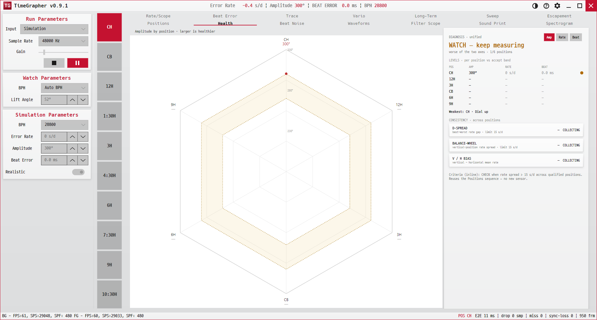

10. Health
수직 8개 자세의 측정값을 팔각형 레이더로 펼치고, 수평(CH/CB)은 아래 게이지로 분리해 보여주며, 옆의 진단 패널에서 "이 시계가 건강한지"를 한 줄 판정으로 정리합니다. 새 센서 없이 Positions 데이터를 그대로 재사용합니다.
Spreads the eight vertical-position readings onto an octagon radar, shows the flat horizontal positions (CH/CB) in a separate gauge strip below, and, in the side panel, boils the watch down to a single health verdict. It reuses the Positions data — no new sensor.
Distribui as leituras das oito posições verticais em um radar octagonal, mostra as posições horizontais planas (CH/CB) em uma faixa de medidores separada abaixo e, no painel lateral, resume o relógio em um único veredito de saúde. Reaproveita os dados de Positions — sem novo sensor.

용도 · Purpose · Finalidade
자세별로 흩어진 측정값을 한 화면에 모아, 진폭·레이트·비트 오차가 허용 범위 안에 있는지(Levels), 그리고 자세 간 차이가 너무 크지 않은지(Consistency)를 동시에 판정합니다. 최종 조치 대신 우선 검토할 자세와 지표를 좁혀 줍니다.
Collects the scattered per-position readings into one screen and judges two things at once: whether amplitude / rate / beat error sit inside the accept band (Levels), and whether the spread between positions is too large (Consistency). Instead of prescribing repair work, it narrows the position and measure to review first.
Reúne as leituras dispersas por posição em uma única tela e julga duas coisas ao mesmo tempo: se Amplitude / rate / Beat Error ficam dentro da faixa de aceitação (Levels) e se a dispersão entre as posições é grande demais (Consistency). Em vez de prescrever reparos, restringe a posição e a medida a revisar primeiro.
무엇이 보이나 · What's shown · O que é exibido
- 팔각 레이더(왼쪽) — 수직 8개 자세(12H·1:30·3H·4:30·6H·7:30·9H·10:30)를 시계 방향 꼭짓점으로 한 팔각형(각 꼭짓점 = 실제 시계 자세). 중심에서 바깥으로 갈수록 값이 큽니다. 수평(평면) 자세 CH·CB는 다른 축이라 아래 게이지로 분리해 보여줍니다. 음영 건강 띠(링)는 다른 그래프와 동일한 허용 범위입니다. 아직 측정 안 된 자세는
—.Octagon radar (left) — the eight vertical positions (12H·1:30·3H·4:30·6H·7:30·9H·10:30) as clockwise vertices (each vertex matches the watch's clock orientation); values grow from centre outward. The flat horizontal positions CH·CB are a different axis, shown in a gauge strip below. The shaded healthy band (ring) is the same accept range the other graphs use. Positions not yet measured read—.Radar octagonal (esquerda) — as oito posições verticais (12H·1:30·3H·4:30·6H·7:30·9H·10:30) como vértices no sentido horário (cada vértice corresponde à orientação do relógio); os valores crescem do centro para fora. As posições horizontais planas CH·CB são um eixo diferente, exibidas em uma faixa de medidores abaixo. A faixa saudável (anel) sombreada é a mesma faixa de aceitação usada pelos outros gráficos. Posições ainda não medidas mostram—. - 측정값 토글(오른쪽 위) —
Amplitude/Error Rate/Beat Error로 레이더가 그리는 항목을 바꿉니다.Metric toggle (top-right) —Amplitude/Error Rate/Beat Errorswitches which measure the radar plots.Alternância de medida (canto superior direito) —Amplitude/Error Rate/Beat Errortroca qual medida o radar traça. - 종합 판정 — 패널 맨 위 판정 문구. Levels와 Consistency 중 더 나쁜 쪽을 따릅니다.Overall verdict — verdict text at the top of the panel; follows the worse of Levels and Consistency.Veredito geral — texto de veredito no topo do painel; segue o pior entre Levels e Consistency.
- LEVELS · 자세별 vs 허용 띠 — 행마다 한 자세, 열은
Position · Amplitude · Error Rate · Beat Error. 오른쪽 점은 그 자세 세 항목 중 가장 나쁜 등급(녹/황/적). 아래에는 우선 검토할 자세가 표시됩니다.LEVELS · per position vs accept band — one row per position, columnsPosition · Amplitude · Error Rate · Beat Error. The dot on the right is the worst of that position's three measures (green/amber/red); the review-focus position is called out below.LEVELS · por posição vs faixa de aceitação — uma linha por posição, colunasPosition · Amplitude · Error Rate · Beat Error. O ponto à direita é o pior das três medidas daquela posição (verde/âmbar/vermelho); a posição a revisar primeiro é destacada abaixo. - CONSISTENCY · 자세 간 — 세 카드:
D-SPREAD(최고−최저 레이트 차, 한계 15 s/d),BALANCE-WHEEL(수직 자세 간 레이트 편차, 한계 15 s/d),V / H BIAS(수직−수평 평균 레이트 차). 각 카드에 수치와OK/CHECK칩.CONSISTENCY · across positions — three cards:D-SPREAD(best−worst rate gap, limit 15 s/d),BALANCE-WHEEL(rate spread across vertical positions, limit 15 s/d),V / H BIAS(vertical − horizontal mean rate). Each shows a reading and anOK/CHECKchip.CONSISTENCY · entre posições — três cartões:D-SPREAD(diferença de rate entre melhor e pior, limite 15 s/d),BALANCE-WHEEL(dispersão de rate entre posições verticais, limite 15 s/d),V / H BIAS(rate médio vertical − horizontal). Cada um mostra uma leitura e um chipOK/CHECK.
읽는 법 · How to read (판정) · Como ler (veredito)
| 판정 · Verdict · Veredito | 의미 · Meaning · Significado |
|---|---|
| Measuring… | 아직 자세가 충분히 측정되지 않음. 자세를 더 재세요.Not enough positions measured yet. Measure more.Ainda não há posições suficientes medidas. Meça mais. |
| OK — in range | 측정된 모든 자세가 허용 띠 안 + 자세 간 편차도 작음.Every measured position is in the accept band and the spread is small.Todas as posições medidas estão dentro da faixa de aceitação e a dispersão é pequena. |
| WATCH — review | 일부 항목이 허용 밖 또는 자세 편차가 한계(15 s/d)에 근접. 관련 행과 카드를 우선 확인하세요.Some measure is out of band, or the spread is near the limit (15 s/d). Review the affected row and card first.Alguma medida está fora da faixa, ou a dispersão está perto do limite (15 s/d). Revise primeiro a linha e o cartão afetados. |
| ALERT — review required | 허용을 크게 벗어났거나 자세 편차가 큼. 표시된 자세·지표·Consistency 카드를 우선 검토하세요.Clearly out of band or a large spread. Review the indicated position, measure, and Consistency card first.Claramente fora da faixa ou com grande dispersão. Revise primeiro a posição, a medida e o cartão Consistency indicados. |
- 레이더 다각형이 건강 띠 안에 고르게 머물수록 좋습니다. 한 꼭짓점만 안쪽/바깥으로 튀면 그 자세가 약한 것입니다.A radar polygon that sits evenly inside the healthy band is best; a single vertex poking in/out marks a weak position.Um polígono de radar que permanece uniformemente dentro da faixa saudável é o ideal; um único vértice projetando-se para dentro/fora indica uma posição fraca.
- BALANCE-WHEEL가
CHECK면 매달린(수직) 자세 간 레이트가 15 s/d를 넘는 것 — 밸런스 휠 불균형을 의심합니다(Positions 탭의 불균형 경고와 같은 기준).ACHECKon BALANCE-WHEEL means vertical-position rate varies more than 15 s/d — suspect a balance-wheel imbalance (same rule as the Positions unbalance alert).UmCHECKem BALANCE-WHEEL significa que o rate entre as posições verticais varia mais de 15 s/d — suspeite de um desequilíbrio da roda de balanço (mesma regra do alerta de desequilíbrio da aba Positions).
이 탭은 Positions와 같은 스냅샷을 읽습니다. 따라서 자세를 더 많이·오래 잴수록 레이더와 판정이 채워집니다. 허용 띠와 판정 최소 beat 수는 설정을 따르므로, 설정을 바꾸면 이 탭의 판정도 함께 움직입니다.
This tab reads the same snapshot as Positions, so the radar and verdict fill in as you measure more positions for longer. The healthy band and minimum verdict beat count track settings, so this tab's verdict moves with them.
Esta aba lê o mesmo snapshot de Positions, então o radar e o veredito vão se preenchendo à medida que você mede mais posições por mais tempo. A faixa saudável e o número mínimo de batidas para o veredito seguem as configurações, de modo que o veredito desta aba acompanha essas configurações.